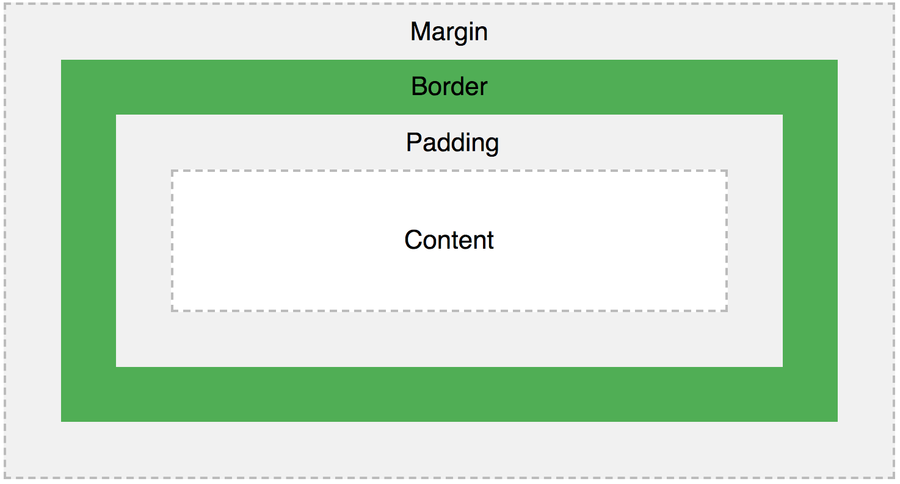

The CSS box model is used on every HTML element where a box is wrapped around the element and consists of a margin, border, padding and content.
Here is an image of the CSS Box Model:
 CSS Box Model Example - W3SchoolsContent - The content which normally includes text and images.
Padding - The padding is a cleared area around the content to create space between the content and the border.
Border - The border surrounds the padding and the content.
Margin - The margin does the same as the padding except it clears the area around the border to create space.